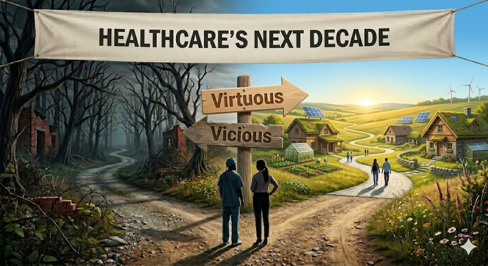

The healthcare industry has spent the better part of two decades half-assed attempting or outright resisting value-based care. The reasons have been understandable. The operational model is harder, the time horizons are longer, and the financial bets are real. Change is hard. Although, none of that resistance has stopped the direction of travel, and the headwinds against it are no longer something the industry can ignore.
Policy, economics, and consumer demand have made the change unavoidable. Technology is advancing at a pace that is reshaping every industry it touches, and healthcare is no exception. And patients, accustomed to consumer-grade experiences in every other corner of their lives, are increasingly demanding genuine health promotion rather than better-managed sick care. The cards are stacked against the old way of working.
Change can feel daunting. It does not have to be. We can build a virtuous cycle in which value-based care drives genuine upstream care, upstream care generates the longitudinal data healthcare has been missing, and that data finally lets evidence-based medicine catch up to and catalyze the work value-based care was designed to do.
The framework for value creation
Value creation in healthcare depends on three things that build on each other. You need good data; complete, accurate, longitudinal. To get that good data, we must change how patients interact with the system and how care is delivered. That means moving care and data acquisition upstream, which in turn requires a different model of patient engagement. Then you need to take the data and the engagement and turn them into something that compounds — a virtuous cycle in which evidence-based medicine and value-based care work in tandem. And the whole thing runs on a culture of continuous improvement.
Good data. AI is going to be disruptive to healthcare. Your organization will either be disrupted by it or use it to be a disruptor. Get the data substrate right, and AI becomes the engine of a continuous-improvement system that keeps generating value over time. Get it wrong, and AI accelerates the competitors who did. Technology is mature enough to do extraordinary work, but only when it is trained on data that captures what drives health. Claims records and EHR snapshots were never going to be enough. The signals that predict disease — metabolic drift, behavioral patterns, social connection, environmental exposure, sleep, stress — exist almost entirely outside today's clinical data infrastructure. The substrate has to be built first. More in part 1 of the series.
Upstream care and patient engagement. Most of what the industry currently calls "moving care upstream" is reactive care made more efficient; site-of-service shifts, top-of-license expansion, earlier disease detection. None of it is operating on the conditions that produce disease in the first place. Genuine upstream care happens on years-to-decades time horizons, intervenes on the long-arc drivers of health, and requires sustained patient engagement that the fifteen-minute clinical encounter was never built to provide. A handful of organizations have already figured out the clinical model. The barriers to scaling it are not clinical. They are economic, cultural, and infrastructural. More in part 2.
The evidence-generation loop. Evidence-based medicine demands the kind of evidence that takes decades to generate. Value-based care demands action this year. The gap between them is where preventive medicine quietly stalls. But value-based organizations are uniquely positioned to close it. They have the capitated economics, the longitudinal data flow, and the financial incentive to invest in prevention. They are also positioned to generate the observational evidence base the field has been waiting on. VBC is not just a payment model. It is an evidence-generation model, if it is structured to capture and publish. More in part 3.
What happens once it is running
The interesting thing about the framework is not any single layer. It is what happens when the three layers are working together.
Each round of upstream care generates new data. Each piece of data improves the next round of intervention. Each intervention produces observational evidence that refines the next round of clinical decision-making. The system stops behaving like a project and starts behaving like a continuous-improvement loop — what lean manufacturing has called Kaizen for decades, and what healthcare has talked about wanting without quite knowing how to build.
Value-based care is not just a payment model. It is a continuous-improvement system that gets demonstrably better the longer it runs.
The Kaizen frame matters because it reframes what value-based care actually is. The conventional view is a payment model that asks providers to absorb financial risk in exchange for the chance to do better work. The continuous-improvement view is something more — a system that gets demonstrably better at producing health outcomes the longer it operates, because each cycle generates the data that informs the next cycle. That is a fundamentally different posture from "let us see if we can hit the quality metrics this year."
Even before the full framework is in place, organizations operating under value-based arrangements have data today that supports this kind of work. Rate, mix, and volume analysis of MSSP or ACO REACH performance, for instance, surfaces the process metrics that point at where the next improvement cycle should focus — the kind of data-driven targeting that lets a continuous-improvement loop start running on day one.
That is what makes the destination feel achievable instead of theoretical. A continuous-improvement system does not require anyone to solve healthcare in a single move. It requires organizations to start where they can, learn from what happens, and let the compounding take over.
Where to start
Find a starting place and work upstream.
The data infrastructure that exists today, however imperfect, is enough to begin building on. The upstream care model that works today, however small the scale, is enough to start expanding. The longitudinal evidence that can be generated from a single value-based organization's data, however limited the population, is enough to publish.
The sequence matters less than the starting point. Organizations that wait for the comprehensive plan, the perfect tooling, or the right moment will still be waiting in five years. The organizations that began somewhere, anywhere, and let each layer of the framework pull the next one into focus will have built something the rest of the field is still trying to design.
If you want to see where your organization sits on this picture, the MSSP ACO Explorer and ACO REACH → LEAD Explorer surface the rate-mix-volume patterns described above. If you want to talk about where your data infrastructure is and is not ready, or what generating publishable evidence from your value-based operations could actually look like, we'd like to talk.